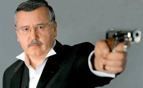

Кандидат у Президенти України Анатолій Гриценко

підтримка : 6.91%
Анато́лій Степа́нович Грице́нко (25 жовтня 1957, село Багачівка, Звенигородський район,
Черкаська область, Українська РСР) — український політик і військовий діяч, міністр
оборони України (2005–2007), народний депутат України VI і VII скликань, голова Комітету
Верховної Ради України з питань національної безпеки і оборони (VI скликання), голова
політичної партії «Громадянська позиція». Полковник запасу. Кандидат технічних наук (1984).
Автор понад 100 наукових робіт.